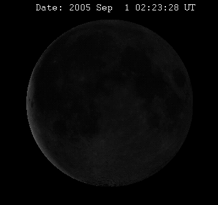

Hierboven wordt de huidige voorraad die zich in het ruimteschip bevind weergegeven
Omtrek = 10916 km
Diameter = 3476 km
Massa = 7,35×1022 kg
De afstand van de Maan tot de Aarde is wel 405 500 km. De Maan doet er 27,3217 dagen over om een baan rond de aarde te maken. Deze baan is 363104 km lang en heeft een diameter van 3476 km.
De Apollo 11 was de eerste missie die mensen op de Maan zette. Dit was op 24 juli 1969. De man die als eerst een voet op de maan zette was Neil Armstrong. Hij wordt ook wel de eerste maanwandelaar genoemd. De rest van de bemanning bestond uit Buzz Aldrin en Micheal Collins.
De Aarde veroorzaakt ook getijdenwerking op de Maan. De Aarde heeft een ruim 80 keer grotere massa dan de maan en heeft daardoor een groot effect op de maan. De draaisnelheid is hierdoor flink afgenomen, wat er voor zorgt dat de Maan niet meer om zijn as draait. Dit komt er eigenlijk op neer dat de maan steeds met dezelfde kant naar de Aarde staat gekeerd.
